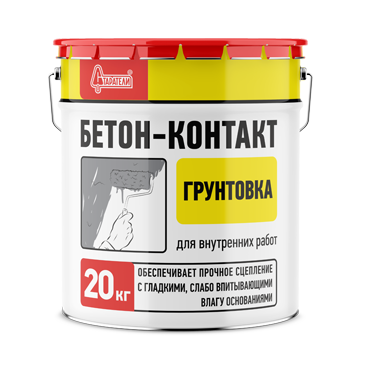

გრუნტი "BETON-CONTACT"
მკვრივი, გლუვი ზედაპირებისთვის თაბაშირის წასმამდე. გამოიყენება ბეტონისა და ზეთის საღებავით დაფარული ზედაპირებისთვის.
ფასი: 107 ლარი
მოცულობა: 20კგ
მკვრივი, გლუვი ზედაპირებისთვის თაბაშირის წასმამდე. გამოიყენება ბეტონისა და ზეთის საღებავით დაფარული ზედაპირებისთვის.
ყველაზე ხელმისაწვდომი სტარატელის ბრენდის პრაიმერებს შორის. იგი გამოიყენება შიდა შენობაში რემონტის ბოლო ეტაპებზე, კედლებისა და ჭერის ზედაპირების დასამუშავებლად, შეღებვამდე ან შპალერის დადებამდე. იგი შექმნილია გამოყენებული მასალების შეწეპების სიმტკიცის გასაზრდელად და საღებავებისა და შპალერის წებოების მოხმარების შესამცირებლად.


იგი გამოიყენება შიდა და გარეთ კედლების, ჭერისა და იატაკის ზედაპირების დასამუშავებლად შემდგომი დასრულების სამუშაოებამდე. იგი გამოიყენება წასასმელი მასალების სიმკვრივის გასაზრდელად, უზრუნველყოფს რასტვორის თანაბარ შეკვრას თაბაშირის და ცემეტის ნარევების.


იგი გამოიყენება შიდა და გარეთ კედლების, ჭერისა და იატაკის ზედაპირების დასამუშავებლად შემდგომი დასრულების სამუშაოებამდე. იგი შექმნილია ძველი, ფხვიერი, არამდგრადი საძირკვლის გასამაგრებლად, უზრუნველყოფს თაბაშირისა და ცემენტის ნარევების ერთგვაროვან დამაგრებას, ზრდის გამოყენებული მასალების საძირკველთან გადაბმის ძალას.